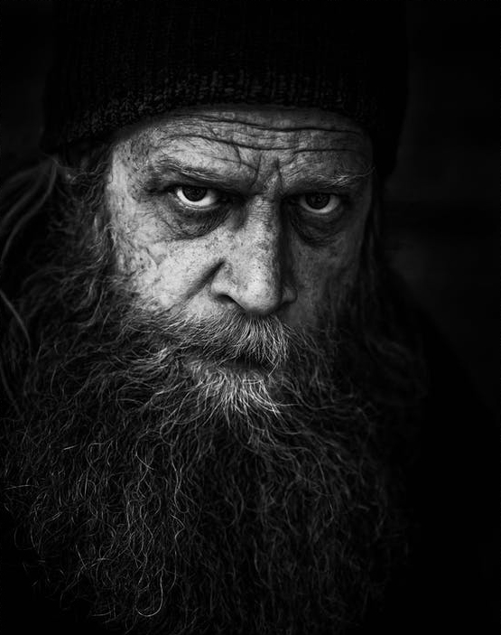
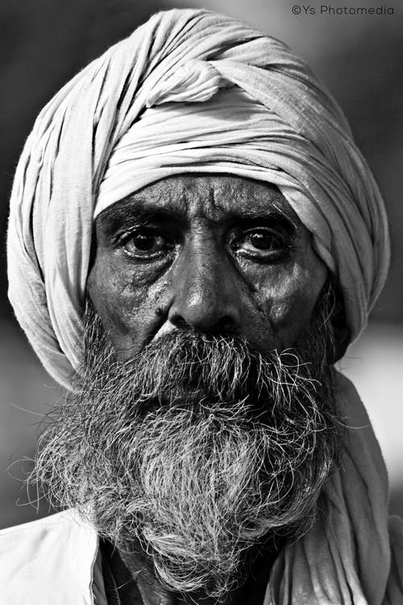
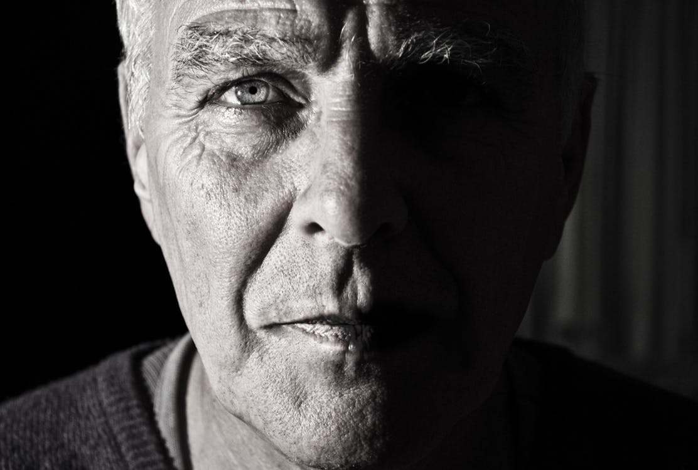
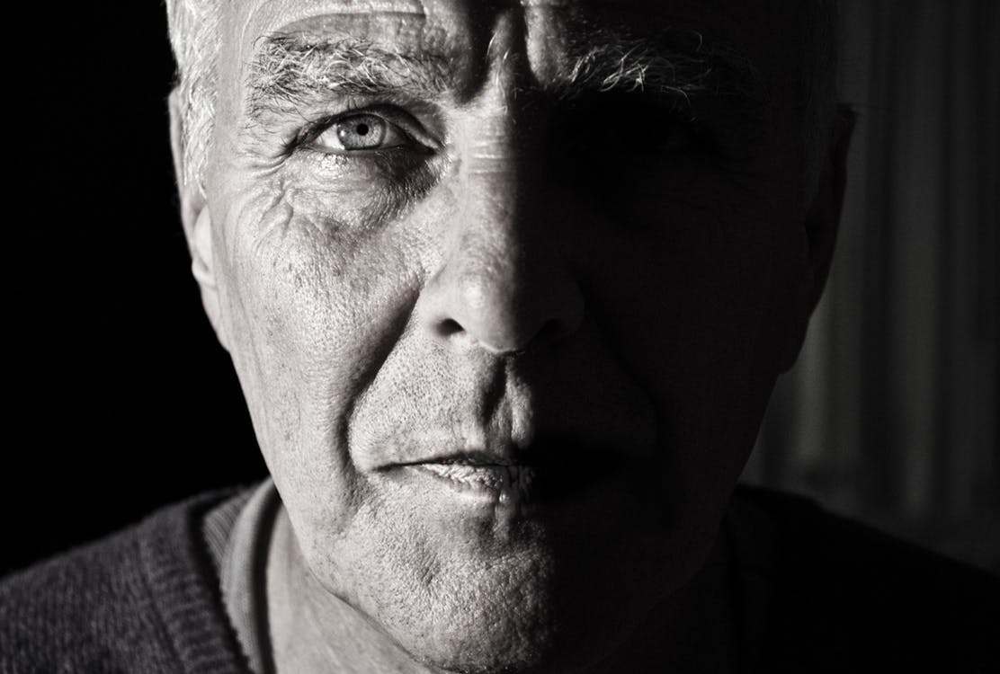
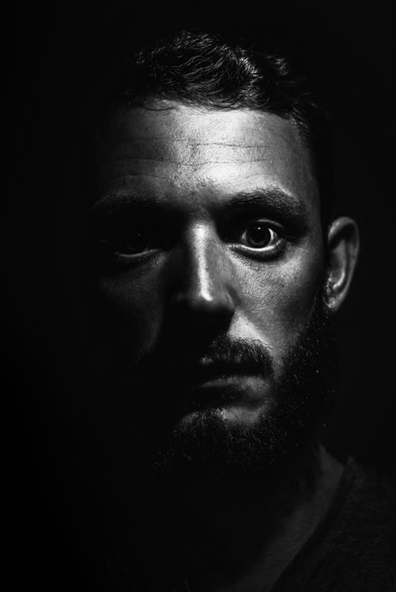

Natural Light
Learn how to take beautiful portraits with minimal equipment; how light affects your images and how to make the very best of any location.
Portrait
Learn how to take full control of lighting of your subject and the background in your images, from flattering portraits to dramatic shots.
Studio Lightning
In the past few years the cost of studio lighting has fallen dramatically and for a very modest outlay you can set up your own home studio.

Creative
Learn how to take beautiful portraits with minimal equipment; how light affects your images and how to make the very best of any location.
About Jeff Workshop
Jeff Morgan is a New York based photographer specializing in portraits, people and events. He has completed countless location and studio assignments for a wide range of corporate, editorial, institutional and non-profit clients.
To provide high-quality education and training in photography with Courses and Workshops designed to inspire you and help you achieve your creative goals. We strongly believe that you have the potential not only of success but also of fulfilment and greatness as creative individuals.
At the London School of Photography, our vision is to be a trusted source in photographic education and training, understanding and responding to your needs with products and services that provide true value and bottom line results.
 Portrait Photography Workshop
Join us on this fantastic full day (6hrs) ACTION dog photography workshop with specialist canine photographer Mary Coe who will be our guest tutor for the day. Working with Mary's own dogs our day will be run from her home in Worthing. We will cover action photography in the wood a short walk away, followed by a fabulous a water session in the sea (with lots of running and splashing) just two minutes away before returning to review the photographs and to discuss editing.
26
This workshop is limited to just 6 people and will have a backstop date of April 7th in the event of bad weather.
 

27
Join our full-day Action Dog Photography Workshop with specialist photographer Mary Coe. Spend six hours capturing dogs in action, from the woods to a lively beach session. Limited to 6 participants, with a backup date of May 25th for inclement weather. Skill level 3.
28
This workshop is limited to just 5 people and will have a backstop date of in the event of bad weather (either too hot for the dogs or too wet). Skill level 3. Joining instructions and directions will be e mailed out individually near the time. This workshop runs from 10am until 4pm.
Unique Methodology
Conventional educational methods often leave you having to remember the concepts you were taught or trying to figure out how to apply them. The London School of Photography method leaves you applying what you learned naturally and without effort.
To provide high-quality education and training in photography with Courses and Workshops designed to inspire you and help you achieve your creative goals. We strongly believe that you have the potential not only of success but also of fulfilment and greatness as creative individuals.
Similar to anything you have already mastered, in our photography courses and workshops you learn by direct personal discovery. From this experience, a new skill is yours forever.
Theme: Gun Dog Day
A dog photography workshop with specialist canine photographer Caroline Dell who will be our guest tutor for the day. Working with Caroline's own dogs our day will be based at her studio barn near Sheffield.
We will cover natural light, Off camera flash, studio work, action photography with a water session. Caro will also demo her own post-processing technique. Joining instructions and directions will be e mailed out individually near the time. This workshop runs from 10am until 4pm.
This workshop is limited to just 5 people and will have a backstop date of in the event of bad weather (either too hot for the dogs or too wet). Skill level 3. Joining instructions and directions will be e mailed out individually near the time. This workshop runs from 10am until 4pm.
29
Jeff Morgan - Biography
From a young age Andrés had an affinity for the arts, taking classes in painting, sculpture and music beginning at the age of six to motion graphics and 3D animation as a teenager. In 1999, he graduated top of his class from the Art Institute of Medellin with a B.A. in Advertising and decided to move to the U.S. Miami, his home for 17 years, was the place where he embarked on his photography career after working for a multi-media company.